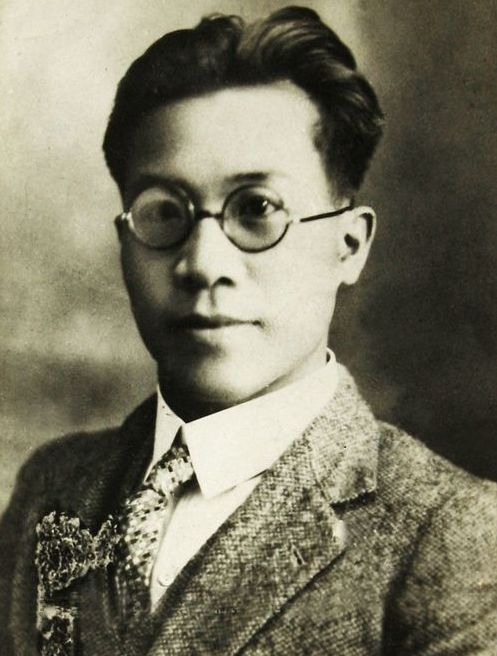

俞秀松
俞秀松（1899—1939），浙江湖州人，中国共产党早期重要领导人之一。他是中国社会主义青年团首任书记，积极推动马克思主义在青年学生中的传播，为中国共产党创立和革命力量的壮大做出了重要贡献。
作为坚定的马克思主义者，俞秀松在青年团和党组织中倡导进步思想，组织青年投身革命，培养了一大批革命骨干。他一生坚守信念，虽屡遭挫折，但始终不改其志。
在家庭生活中，俞秀松注重以身作则，强调爱国、正直、清廉的品质。他常教育青年人要立志报国，不能贪图安逸，要敢于为民族独立和人民解放而奋斗。
俞秀松的家风以忠诚、清廉、坚毅为核心，成为浙江乃至全国革命青年的楷模。他的精神与家风在中国共产党发展史上留下了不可磨灭的印记。
← 返回中国地图